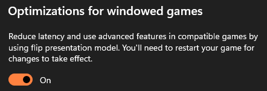
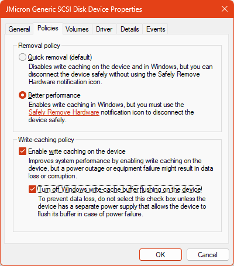

| Ник |
Пост |
Дата |
| 0ka(0ka) | Https://Revi.cc, после установки включить memory compression через встроенную утилиту. Если все равно лагает и багает то пишите свой тг | 2023-09-15T21:59:51.861Z |
| bunkerfox(bunkerfox) | Это же бред полный, ставите Win11 Windows 11 - Скачать бесплатно. Операционные системы c последними драйверами и ooshutup10, и вырубаете сжатие памяти, и вообще все с ssd mini tweaker, но кроме фетчей и гасите защитник винды или ставите eset.
Если у вас жестокий диск до сих пор вместо ssd, в диспетчере устройств диску ставите галочку отключения очистки буфера. Да и скорее всего у вас что-то явно с диском, ну и тем более в вашем случае линекс не поможет, а только усугубит положение. И выше все написаное это не просто так, целый зоопарк тазиков на g620/g2010 обслуживаю. Да и тем более 11 может с железа больше получать прозводительности за счет улучшений как минимум в граф.стеке, и новой модели драйверов для сетевых устройств NetAdapterCX. А самое главное, вырубайте нафиг эффекты прозрачности в цветах через параметры. Ну и ни одного бага не ловил из вами описанного, потому что весь этот хлам надо сносить, а не иметь рядом. И браузер ставите бету WaterFox G6.0 Beta 1 | Waterfox, это форк лисы вылизанный и доделанный в отличие от оригинала, который еще может ставить и аддоны от хромоногих. А если ваш комп антивирус невывозит, то используйте фильтрующие dns и защиту от эксплойтов с обязательным uac. В браузерах и везде где либо отключаете AV1 кодеки и VP9, avc только ваш вариант. И напоследок, весь софт должен быть х64 вместе с системой, не слушайте никого, что 64битки якобы больше памяти едят, вся суть в использовании 64 битных инструкций процессора, которые значительно быстрее. Еще виртуализацию гасите обязательно и проходитесь msi util v3.
Ну и совет на будущее, вникайте в свои проблемы и изучайте пути решения, а не кривые косые рельсы городите из граблей. А если всякие memreduct, driverpacksolution используете, винду ставите на mbr в legacy csm, то ничего не поможет.

 | 2023-09-16T14:43:30.801Z |
| 0ka(0ka) | 64 битки не якобы, а действительно жрут больше озу, chromium очень заметно. Вырубать сжатие памяти на 11 винде с 4гб(3.8) озу ну это просто гениально… Про виртуализацию, legacy непонятно (на железе нетy rebar для которого требуется uefi). Про улучшения граф стека на железе со старыми gpu драйверами это спорно…
VP9 в браузере отключать как-то смысла нет: если смотришь видео, то обычно кроме браузера ничем больше не пользуешься и проблем с воспроизведением быть не должно, но если сильно хочется, то в хромиум есть расширение h264ify для ютуба.
Сам пользуюсь revi os 10, и если убрать все с автозагрузки то потребление озу менее 1гб после запуска, сжатие памяти при упоре в озу дает бесплатно как минимум 200мб и уменьшает активность файла подкачки. Если запущен фоновый софт типа дискорда или стима то отключение аппаратного ускорения освобождает видеопамять, что стоит того при почти постоянном упоре в озу.
На revi/сток 11 тоже сидел, но кроме увеличенного потребления озу ничего не увидел (железо/gpu драйвер не поддерживает никакие улучшения граф стека), делал тесты average, 1%, 1% low fps в играх без упора в озу несколько раз и разница минимальна, возможно на уровне погрешности, но все же в пользу 10 на сколько я помню.
Как весь этот дикий оффтоп еще здесь находится не пойму, в других темах за подсказку не по теме сразу пост удаляется. | 2023-09-16T17:56:36.952Z |
| bunkerfox(bunkerfox) |
- Ну на практике это спорное утверждение, лишь теоритическое изыскание зачастую. (Ну и показометром хвастаться в угоду потери производительности ну такое себе)
- У него и так проц ни о чем, только лишнюю работу выполняет.
- Виртуализация блокирует MSR-регистры и изоляция ядра сама включается ныне. (Потому она в большинстве случаев всегда выключена по дефолту в биосах)
- VP9 в его проце вроде как аппаратно нет, ну и мой же планшет на haswell как-то быстрее садится\греется, и встройку напрягает больше.
- Можно с таким же успехом Windows XP Game Edition поставить.
- Речь не о играх, а о практическом применении.
Ну так это и так оффтоп, с таким топовым железом врываться и жаловаться, что на нем сайт не работает в каком-то левом браузере. | 2023-09-16T18:15:24.206Z |
| 0ka(0ka) | ну и как это понять или ответить? 1 пункт к чему вообще относится? вставь цитату, и, пожалуйста без “с таким же успехом можно…” а с нормальным аргументом | 2023-09-16T18:19:14.960Z |
| 0ka(0ka) |
ну тогда уже надо посылать на авито или али (в моем пк 2008г проц получше будет), потому что оптимизация ОС тут даст мало профита | 2023-09-16T18:38:56.239Z |
| ilyaigpetrov(ilyaigpetrov) | 2 posts were merged into an existing topic: Ntc.party не работает в китайском хромоподобном браузере 360 Extreme Explorer v13.0.2310.0 (на основе Chromium 86) под Windows XP SP3 | 2023-09-17T17:47:24.858Z |
| fdsadf4345 | Вырежьте всю телеметрию, вот вам будет оптимизация. Хотя бы удалите планировщик заданий, он запускает всё то, что лучше не запускать никогда )) А какими то утилитами, всё это бутафория, ничего вы сделать не сможете.
Все ваши действия на компе, сразу просекает майк и делает всё то, чтоб помешать вам и чтобы вы не делали, у вас никогда ничего не получится, майк на 20 шагов впереди, вот вам 10 десятка и одиннадцатая, но зато шагаете в ногу со временем ) | 2023-09-18T14:50:05.543Z |
| 0ka(0ka) | Не удаляйте планировщик никогда… Вы нарушаете работу программ и убиваете процессы оптимизации винды, например такие как генерация образов ngen или дефрагментация/trim дисков.
Часто встречаю людей которые “оптимизируют” своими руками или по советам с ютуба (там 80% это полный бред созданный ради лайков) и потом страдают потому что начинаются проблемы, и они уже не могут/не помнят как откатить изменения. Разработчики майкрософт будут поумнее рандомных оптимизаторов… | 2023-09-18T15:22:34.775Z |
| ilyaigpetrov(ilyaigpetrov) | | 2023-09-18T15:25:06.217Z |